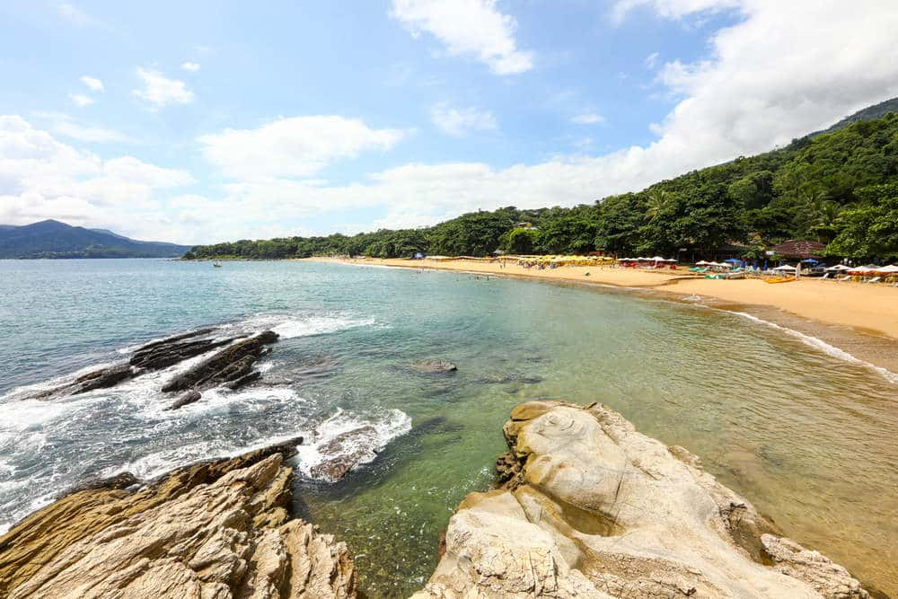
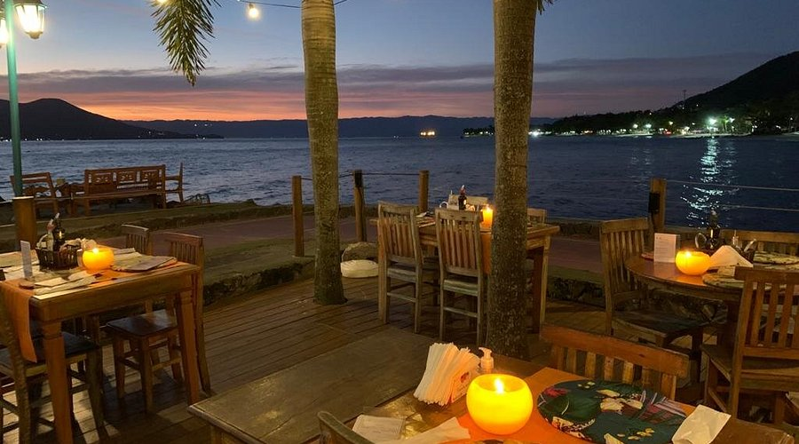

Ilhabela
Ilhabela, localizada no litoral norte do estado de São Paulo, é um dos destinos turísticos mais cobiçados do Brasil. A cidade, composta por uma ilha principal e várias ilhotas, é conhecida por sua combinação única de belas praias, rica vegetação tropical e montanhas, o que a torna um local privilegiado para ecoturismo, aventuras ao ar livre e turismo de luxo. Sua infraestrutura turística bem desenvolvida, com opções de hospedagem, gastronomia e atividades para todos os gostos, a tornam uma excelente escolha para quem busca desde relaxamento até aventura intensa em meio à natureza.
Ilhabela é um lugar ideal para os amantes de atividades náuticas, trilhas e natureza exuberante, com destaque para suas águas cristalinas, rica fauna marinha e ambiente preservado. Além disso, a cidade também oferece uma imersão na cultura caiçara, com festas tradicionais, culinária típica e o charme do ambiente litorâneo. O fato de ser uma cidade com grande apelo ecológico e cultural faz com que seja uma opção muito procurada por turistas que buscam um destino que une lazer, ecoturismo e cultura local.
Principais pontos turísticos
- Praia do Curral 
- Cachoeira da Toca
- Pico do Baepi
- Ilha das Cabras
Uma das praias mais famosas da cidade, a Praia do Curral é conhecida por suas águas claras e calmantes, ideais para banho e esportes aquáticos. A praia conta com diversos bares e restaurantes à beira-mar, oferecendo uma estrutura excelente para os visitantes.
É uma das praias mais procuradas por turistas e moradores, proporcionando excelente infraestrutura para quem deseja relaxar ou praticar atividades como stand-up paddle e caiaque.
A Cachoeira da Toca é uma das mais visitadas da ilha, famosa pela beleza de suas quedas d'água e piscinas naturais. A trilha até a cachoeira é de fácil acesso, e o local oferece um ótimo ambiente para um banho refrescante.
Além da beleza natural, a cachoeira é ideal para quem busca atividades de ecoturismo e contato com a natureza, oferecendo uma experiência única e revigorante.
O Pico do Baepi é um dos maiores atrativos para os amantes de trilhas e caminhadas. Com 1.030 metros de altitude, o pico oferece uma vista panorâmica deslumbrante da ilha e do mar ao redor. A trilha é considerada moderada a difícil, sendo indicada para quem tem experiência em trekking.
O Pico do Baepi é ideal para aventureiros que desejam explorar as belezas naturais de Ilhabela e experimentar uma das vistas mais incríveis da ilha.
A Ilha das Cabras é uma pequena ilhota situada bem perto da praia central de Ilhabela, conhecida por suas águas transparentes e pela excelente visibilidade subaquática. É um local muito procurado para a prática de mergulho e snorkeling devido à rica fauna marinha e corais.
Para os apaixonados por mergulho e vida marinha, a Ilha das Cabras oferece uma das melhores experiências de observação de peixes e corais no Brasil.
Principais pontos gastronômicos
- Pimenta de Cheiro 
- Localização: Praia do Perequê.
- Portofino
- Localização: Próximo à Praia do Viana.
Um dos restaurantes em Ilhabela mais visitados, devido a apresentar excelente comida e um cenário impressionante, com vista da praia.
O Menu a La Carte apresenta mais de 80 opções entre carne, peixe, massa e vegetariano e os Pratos do Dia, com o menu que muda todos os dias. Com certeza uma excelente opção para se visitar.
O restaurante Portofino oferece um cardápio contemporâneo de qualidade, com opções de peixes, carnes, aves, risotos e massas. Está instalado numa casa colonial com vista para o mar, localizado em posição privilegiada no lindo jardim do Hotel Porto Pacuíba.
O restaurante prioriza atender aos clientes hospedados no hotel, mas tende ao público externo, mediante reserva prévia. É uma ótima opção para se experenciar os pratos típicos da região.
Principais pontos culturais
- Museu Náutico de Ilhabela
- Localização: Centro histórico de Ilhabela.
- Festa de Nossa Senhora D'Ajuda
- Localização: Centro histórico de Ilhabela.
- Centro Cultural da Vila
- Localização: Centro de Ilhabela.
O Museu Náutico de Ilhabela é dedicado à história da navegação e da pesca artesanal, com um acervo de objetos antigos, como embarcações e utensílios usados pelos caiçaras. O museu também aborda a evolução do turismo náutico na região.
É um excelente ponto para quem deseja aprender sobre a história marítima de Ilhabela e a relação da cidade com o mar ao longo dos séculos.
A Festa de Nossa Senhora D'Ajuda é uma celebração religiosa e cultural que ocorre anualmente, com missas, procissões e festas típicas. A festa é uma das mais tradicionais de Ilhabela e atrai turistas e moradores para vivenciar a cultura religiosa local.
A festa é um importante evento cultural, refletindo as tradições da cidade e proporcionando uma imersão nas práticas religiosas e culturais de Ilhabela.
O Centro Cultural da Vila é um espaço dedicado à promoção de atividades culturais, com exposições, peças teatrais, shows e eventos relacionados à arte e cultura caiçara.
É um ponto ideal para quem deseja explorar mais sobre a arte local e participar de eventos culturais durante sua visita a Ilhabela.